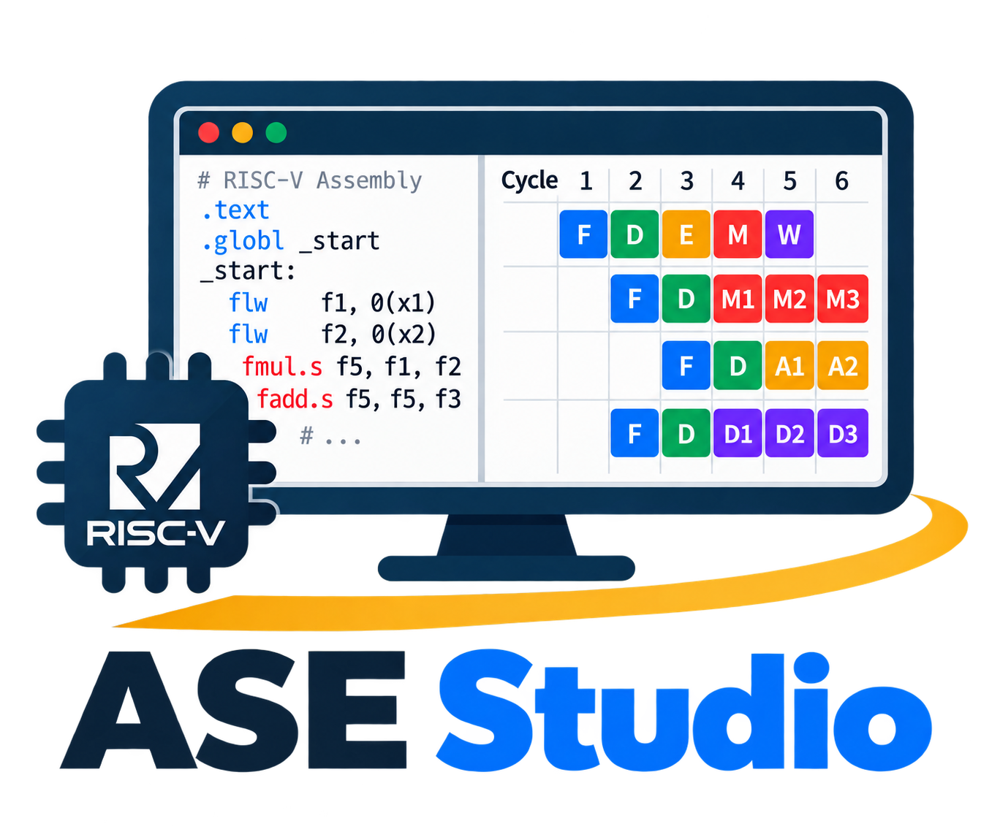
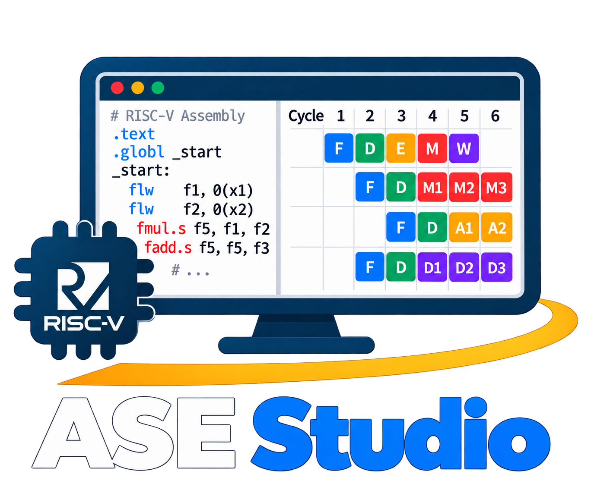

ASE Studio is a free educational application for learning RISC-V assembly, processor hazards, memory behavior, and instruction pipelines. It was developed by Behnam Farnaghinejad and is available at cad-polito-it/ase-studio.
The simulation backend is based on the open-source gem5 architectural simulator. The five-stage RISC-V pipeline model builds on modifications developed by contributors to the ase_riscv_gem5_sim project.
This project is intended for education and research. The repository is distributed under the GNU General Public License version 2; redistribution and modification must follow that license. gem5 components retain their upstream copyright and license notices. The software is provided without warranty.
Contributions are welcome. Feel free to open an issue, submit a pull request, or contact us!
Set one RISC-V toolchain directory; ASE Studio finds its matching GCC and objdump automatically. Paths may use $HOME, $USER, or $ASE_STUDIO_ROOT.
$HOME
$USER
$ASE_STUDIO_ROOT